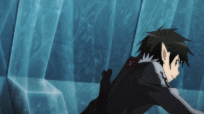

Sword Art Online
Quirito
1ra tempotada de SAO

quirito heroe
1000 de poder
vida 70000
defensa 100
Quirito
2da tempotada de SAO

quirito cheto
3000 de poder
vida 40000
defensa 10000
Quirito
3ra tempotada de SAO

quirito en modo matrix
5000 de poder
vida 80000
defensa 900000
Quirito
4ta tempotada de SAO

quirito Dios
10000000000000 de poder
vida 1000000
defensa 1000000000